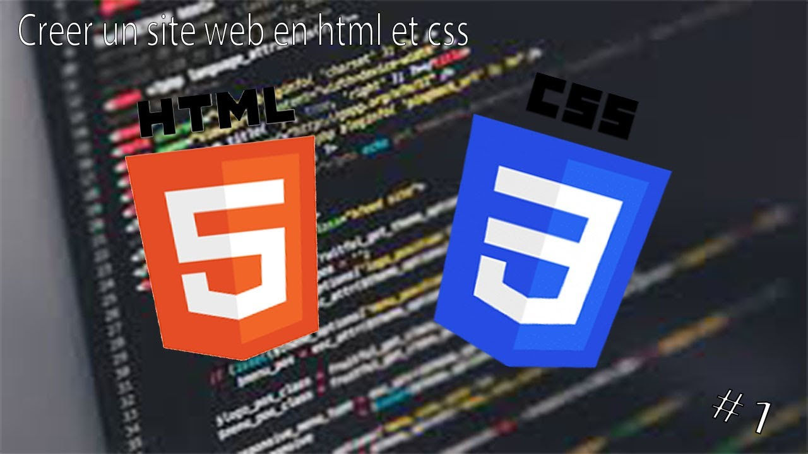
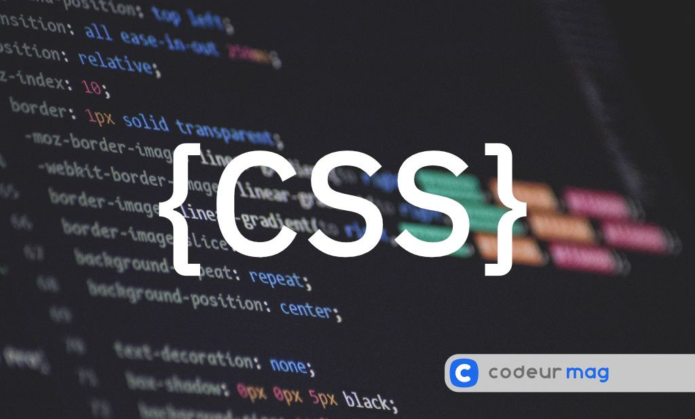

Le but de ce cours est de vous apprendre un peu plus sur le HTML5 et le CSS3. Outre cela, je vais également
vous montrer la logique et les mécanismes derrière ces deux langages afin que vous compreniez ce que vous faites et que vous deveniez
vite autonomes.
Ce cours est divisé en plusieurs parties :
Au fil de ce cours vous aurez droit à des exemples précis d'utilisation.
A qui s'adresse ce cours ?
Les langages HTML et CSS sont, comme nous allons le voir, à la base de tout projet de programmation informatique. Plutôt simples à maîtriser et à comprendre, ce cours s'adresse à tous, tout en offrant une assez bonne clarté dans les notions abordées.
A propos de l'auteur
Je suis OUATTARA Ulrich, étudiant en Statistique et Informatique (en Économie également), passionné par l'entrepreneuriat et la technologie, désirant une carrière comparable à celles des plus grands (car l'ambition y est). Diplômé d'un baccalauréat scientifique (Bac D), j'ai poursuivi mes études à l'Université Nazi Boni de Bobo-Dioulasso et j'y suis encore étudiant en deuxième année au jour de la publication de ce site.
J'espère être à la hauteur de vos attentes.
Tout d'abord, pour tout passionné d'informatique, il faut savoir que le HTML et le CSS sont deux véritables standards et n'ont donc, à ce titre, aucun concurrent. Ensuite, il faut noter que ces deux langages sont le socle de tout projet de développement web. Que vous vouliez créer un site, une application mobile, un blog ou autre, vous serez obligé de passer par les langages HTML et CSS.
Cependant, il existe des moyens encore plus faciles pour obtenir du HTML ou du CSS grâce à des solutions toutes faites comme les frameworks (WordPress, PrestaShop), des éditeurs WYSIWYG (What You See Is What You Get)
ou encore le recours aux services d'une agence spécialisée.
Mais vous êtes-vous déjà demandé : si jamais je rencontre des difficultés, qui va s'en occuper ? Devrais-je encore dépenser de l'argent ? Ou devrais-je arriver à le résoudre tout seul ?
Je ne pense pas qu'utiliser des moyens rapides et fiables soit une mauvaise chose, mais si vous comprenez déjà le HTML ou le CSS avant de faire appel à ces solutions miracles, cela vous épargnera bien des tracas à l'avenir en cas de panne avec votre site.
Finalement, apprendre le HTML et le CSS c'est avoir un socle pour comprendre comment fonctionne son site et ainsi pouvoir le modifier ou corriger des problèmes à l'avenir. Ainsi, il ne faut pas oublier qu'on ne devient pas athlète professionnel sur un coup de tête, mais en faisant des exercices constants, en apprenant et en échouant. Si vous cherchez à comprendre comment ça fonctionne plutôt qu'à rechercher uniquement le résultat, alors vous battrez le plus grand nombre de vos concurrents. Si vous êtes motivé et convaincu, alors passons aux choses sérieuses.
Avant d'entrer dans le vif du sujet, voici une image qui parle à tout le monde, même sans aucune notion de programmation : imaginez que vous construisez une maison.
Le HTML, c'est le squelette de la maison : les murs, les pièces, les portes, les fenêtres. Il donne la structure et dit "ici il y a un salon, ici une chambre, ici la porte d'entrée". Sans lui, il n'y a tout simplement rien à construire.
Le CSS, c'est la décoration et la peinture : la couleur des murs, le style des meubles, l'agencement de la lumière. Il ne change rien à la structure de la maison, mais il change complètement l'expérience qu'on en a.
Retenez donc ceci tout au long du cours : quand vous écrivez du HTML, vous construisez ; quand vous écrivez du CSS, vous décorez. Les deux sont indispensables, mais ils n'ont pas le même rôle, et c'est une confusion fréquente chez les débutants de vouloir "décorer" avec du HTML ou "structurer" avec du CSS.
Description :
Le HTML (HyperText Markup Language ou langage hypertexte de balisage) est un langage créé en 1991 et a pour fonction de structurer et de donner du sens à du contenu. Il est utilisé pour baliser un contenu, c'est-à-dire pour le structurer et lui donner du sens, et ne doit jamais remplacer les fonctions du CSS (qui sert à faire la mise en forme d'un document). Le HTML sert donc à indiquer aux navigateurs quel texte doit être considéré comme un paragraphe, comme un titre, ou que tel contenu est une image ou une vidéo.
Fonctionnement général :
Il y a trois termes dont vous devez connaître le sens en HTML. Ce sont les termes élément, balise et attribut.
Les éléments vont tout d'abord nous servir à définir un paragraphe (élément p), des titres d'importances diverses (élément h1, h2, h3, etc.) ou un lien (élément a).
Un élément est constitué de balises. Dans la majorité des cas, un élément est constitué d'une balise ouvrante et d'une balise fermante.
Exemple : <p>Contenu du paragraphe</p>
Nous remarquerons que dans la balise fermante il y a un slash qui précède le nom de l'élément.
Cependant, certains éléments ne sont constitués que d'une seule balise ouvrante ; c'est le cas du retour à la ligne, br, qui s'écrit <br/>.
À noter que dans le cas d'une balise orpheline, le slash n'est pas obligatoire et est souvent omis par certains développeurs. Il est cependant conseillé de le mettre, pour des raisons de propreté du code et de compréhension dans un premier temps.
Les attributs, enfin, viennent compléter les éléments en leur donnant des indications ou des instructions supplémentaires.
Par exemple, dans le cas d'un lien, on se sert d'un attribut pour indiquer la cible du lien, c'est-à-dire vers quel site le lien doit mener. Notez que les attributs se placent toujours à l'intérieur de la balise ouvrante d'un élément (ou de la balise orpheline le cas échéant).
Exemple : <a href="https://wikipedia.org">Cliquez ici pour aller sur Wikipedia</a>
Ici on distingue l'élément, composé :
Ainsi, l'attribut href indique au navigateur que le lien doit mener vers le site Wikipedia. L'ancre textuelle correspond au texte "Cliquez ici pour aller sur Wikipedia", qui est également l'unique partie visible du lien.
(voir un exemple de lien)
Il existe de nombreux attributs différents, et certains éléments peuvent en avoir plusieurs. Par exemple, l'élément image (img) peut avoir les attributs src (pour indiquer la source de l'image), alt (pour fournir un texte alternatif si l'image ne peut pas être affichée), width et height (pour définir la largeur et la hauteur de l'image).
Exemple : <img src="image.jpg" alt="Description de l'image" width="300" height="200">
Ici, l'élément img est composé d'une balise ouvrante avec plusieurs attributs (src, alt, width et height), et il n'a pas de balise fermante car c'est un élément orphelin.
(voir un exemple de balise img)
En résumé, les éléments, les balises et les attributs sont des concepts fondamentaux en HTML. Les éléments sont les composants de base d'un document HTML, les balises sont utilisées pour délimiter ces éléments, et les attributs fournissent des informations supplémentaires sur les éléments. En comprenant ces concepts, vous serez en mesure de créer des pages web structurées et fonctionnelles.
En HTML5, la structure de base d'une page comprend plusieurs éléments essentiels :
Astuce : sur chaque page MDN ci-dessus, la section "Exemples" affiche à la fois le code HTML et son rendu visuel réel dans le navigateur — idéal pour bien visualiser comment chaque élément s'utilise.
Pour créer une page HTML5 de base, vous pouvez utiliser la structure suivante :
<!DOCTYPE html>
<html lang="fr">
<head>
<meta charset="UTF-8">
<meta name="viewport" content="width=device-width, initial-scale=1.0">
<title>Document</title>
</head>
<body>
</body>
</html>Remarque : pour visualiser votre document HTML5, vous pouvez simplement l'ouvrir dans un navigateur web après l'avoir enregistré. Mais pour ceux qui utilisent des outils de développement, il est possible de voir les modifications en temps réel.
Premièrement, vous aurez sans doute remarqué que le HTML permet d'imbriquer les éléments les uns à l'intérieur des autres ; vous devriez alors faire attention à bien refermer les balises dans le bon ordre.
Exemple : <a><b></b></a>
Deuxièmement, pensez à toujours indenter vos codes, c'est-à-dire à aérer en ajoutant des espaces au début de certaines lignes afin de rendre le code lisible.
Troisièmement, ajoutez des commentaires dans vos codes, ce qui vous permettra de vous situer dans votre travail.
Exemple : <!-- Moi je suis un commentaire, invisible sur la page sauf dans le code -->
C'est une notion qu'on n'explique pas toujours aux débutants, mais qui évite bien des maux de tête : chaque élément HTML se comporte soit comme un élément de bloc, soit comme un élément en ligne.
Un élément de bloc (comme p, div, h1, ul, table) prend toute la largeur disponible et commence toujours sur une nouvelle ligne, un peu comme un paragraphe dans un livre. Deux éléments de bloc ne se placent jamais côte à côte par défaut.
Un élément en ligne (comme span, a, strong, em, img) ne prend que la place nécessaire à son contenu et reste sur la même ligne que ce qui l'entoure, un peu comme un mot au milieu d'une phrase.
Exemple : <div>Bloc 1</div><div>Bloc 2</div> affichera "Bloc 1" et "Bloc 2" l'un en dessous de l'autre, alors que <span>Ligne 1</span><span>Ligne 2</span> affichera "Ligne 1 Ligne 2" côte à côte.
Retenez cette règle simple : si vous voulez organiser la structure générale de la page (colonnes, sections), pensez "bloc" ; si vous voulez habiller un simple mot ou une portion de texte au milieu d'une phrase, pensez "en ligne". (en savoir plus)
Description :
Le CSS (Cascading Style Sheets ou feuilles de style en cascade) est un langage de style qui permet de mettre en forme un document HTML. Il permet de séparer le contenu (HTML) de la mise en forme, facilitant ainsi la maintenance et l'adaptation du design sur différentes plateformes. Par exemple, grâce aux éléments tels que class et id, on peut définir le style de nos textes, les caractères ainsi que la mise en forme.
Le CSS possède plusieurs propriétés et c'est cela qui le rend si essentiel dans l'élaboration d'un site.
Fonctionnement général : lorsqu'un document HTML est chargé dans un navigateur, le CSS est utilisé pour appliquer les styles définis aux éléments du document. Il suit plusieurs étapes pour appliquer ces styles :
Lien vers les descriptions du CSS

<!DOCTYPE html>
<html>
<head>
<style>
p { color: blue; font-size: 16px; }
</style>
</head>
<body>
<p>Ce paragraphe sera affiché en bleu...</p>
</body>
</html><!DOCTYPE html>
<html>
<head>
<style>
#header { background-color: lightblue; padding: 10px; }
</style>
</head>
<body>
<div id="header">Ceci est l'en-tête</div>
</body>
</html><!DOCTYPE html>
<html>
<head>
<style>
.highlight { color: red; font-weight: bold; }
</style>
</head>
<body>
<p class="highlight">Ce texte sera affiché en rouge et en gras.</p>
</body>
</html><!DOCTYPE html>
<html>
<head>
<style>
[target='_blank'] { color: green; }
</style>
</head>
<body>
<a href="https://www.example.com" target="_blank">Lien vers un site externe</a>
</body>
</html><!DOCTYPE html>
<html>
<head>
<style>
a:hover { text-decoration: underline; }
</style>
</head>
<body>
<a href="https://www.example.com">Lien vers un site externe</a>
</body>
</html>Le CSS possède plusieurs propriétés qui permettent de mettre en forme les éléments d'un document HTML. Parmi ces propriétés on peut citer :
Voici, à mon avis, la notion la plus importante à bien comprendre en CSS, car elle explique pourquoi vos éléments ne se placent pas toujours comme vous l'espérez. En CSS, chaque élément HTML est en réalité une boîte rectangulaire, composée de quatre couches, de l'intérieur vers l'extérieur :
Image pour retenir : imaginez un cadre photo posé sur un mur. La photo, c'est le content. Le passe-partout blanc autour de la photo, c'est le padding. Le cadre en bois, c'est le border. Et l'espace que vous laissez entre ce cadre et le prochain tableau sur le mur, c'est le margin. (voir un exemple visuel)
Une question que je me suis longtemps posée en débutant : quelle unité utiliser pour la taille des textes, des marges ou des largeurs ? Voici les plus courantes :
L'élément <form> permet de créer des formulaires pour recueillir des informations auprès des visiteurs (contact, inscription, recherche, etc.). Il se combine avec des champs comme <input>, <label>, <textarea> et <button>.
<form action="/envoyer" method="post">
<label for="nom">Nom :</label>
<input type="text" id="nom" name="nom" required>
<label for="email">Email :</label>
<input type="email" id="email" name="email" required>
<label for="message">Message :</label>
<textarea id="message" name="message" rows="4"></textarea>
<button type="submit">Envoyer</button>
</form>L'attribut required empêche l'envoi du formulaire si le champ est vide, et le type email demande au navigateur de vérifier automatiquement le format de l'adresse saisie. (voir un exemple de formulaire)
L'élément <table> permet d'afficher des données organisées en lignes et en colonnes, à l'aide des balises <tr> (ligne), <th> (en-tête de colonne) et <td> (cellule).
<table>
<thead>
<tr>
<th>Langage</th>
<th>Rôle</th>
</tr>
</thead>
<tbody>
<tr>
<td>HTML</td>
<td>Structure du contenu</td>
</tr>
<tr>
<td>CSS</td>
<td>Mise en forme</td>
</tr>
</tbody>
</table>Flexbox est un modèle de mise en page unidimensionnel (en ligne ou en colonne) qui facilite l'alignement et la répartition de l'espace entre les éléments d'un conteneur, même quand leur taille est inconnue ou variable.
.conteneur {
display: flex;
justify-content: space-between;
align-items: center;
gap: 16px;
}Ici, justify-content répartit les éléments horizontalement, align-items les aligne verticalement, et gap ajoute un espace régulier entre eux.
CSS Grid est un modèle de mise en page bidimensionnel (lignes et colonnes en même temps), idéal pour construire des structures de page entières.
.grille {
display: grid;
grid-template-columns: repeat(3, 1fr);
gap: 20px;
}Cette règle crée une grille de trois colonnes de largeur égale, avec un espacement de 20 pixels entre chaque élément.
Pour adapter une page à différentes tailles d'écran, on utilise des media queries :
@media (max-width: 600px) {
.conteneur {
flex-direction: column;
}
}Ici, sur un écran de moins de 600 pixels de large (comme un téléphone), les éléments du conteneur passeront d'un affichage en ligne à un affichage en colonne.
Pour finir sur une note utile à tous, voici quelques erreurs que j'ai moi-même faites en débutant, et que je vois très souvent chez les nouveaux venus :
Au revoir ! C'était un plaisir.